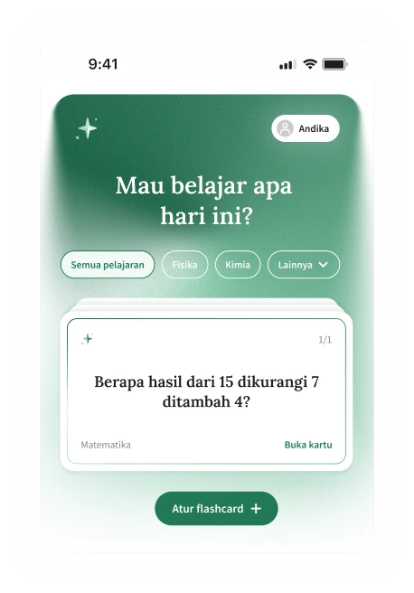

Rancana · Android · Panduan praktis
Cara Membuat dan Menggunakan Flashcard di Rancana
Tulis pertanyaan dan jawaban singkat, lalu pilih pelajarannya. Saat belajar, coba jawab pertanyaannya sebelum membalik kartu.
Tambahkan pelajaran dulu
Buka Rancana di Android. Di bagian Pelajaran, pilih Tambah pelajaran. Isi Judul dan Deskripsi, lalu konfirmasi. Misalnya, tambahkan “Matematika” untuk mengelompokkan jadwal, to-do, dan flashcard matematika.
Bikin flashcard sendiri
- Buka pelajaran, pilih tab Flashcard, lalu Tambah Flashcard.
- Pilih Tambah manual, lalu isi Pertanyaan untuk bagian depan kartu. Kamu bisa menulis hingga 70 karakter.
- Isi Jawaban untuk bagian belakang kartu, juga hingga 70 karakter.
- Pilih Pelajaran, lalu tekan Tambah flashcard dan konfirmasi.
Contoh tampilan flashcard

Kalau materinya panjang, bagi menjadi beberapa kartu. Isi setiap kartu dengan satu pertanyaan dan satu jawaban. Batas 70 karakter berlaku untuk masing-masing sisi kartu.
Latihan dari beranda
- Kembali ke beranda, lalu pilih pelajaran tempat kamu menyimpan flashcard.
- Baca pertanyaan di kartu, lalu coba jawab dulu tanpa melihat jawaban.
- Ketuk kartu untuk membaliknya dan melihat jawaban. Geser ke kartu berikutnya untuk melanjutkan latihan.
- Kalau ingin memperbaiki pertanyaan, buka Semua flashcard dan ketuk ikon ubah pada kartu tersebut. Setelah selesai, ketuk Ubah flashcard untuk menyimpan. Saat kamu mengetuk ikon hapus, aplikasi akan meminta konfirmasi.
Cek jika ada kendala
Flashcard tidak terlihat? Pastikan kamu membuka pelajaran yang dipilih saat menyimpan kartu.
Flashcard belum bisa dibuat? Isi Pertanyaan dan Jawaban, lalu pilih Pelajaran. Paket Gratis memiliki batas 10 flashcard.
Panduan ini membahas pembuatan flashcard secara manual supaya kamu bisa menulis dan mengecek isi setiap kartu sendiri.
Lengkapi kebutuhan belajarmu
Selain flashcard, kamu juga bisa menambahkan tugas dan jadwal kelas ke pelajaran yang sama.